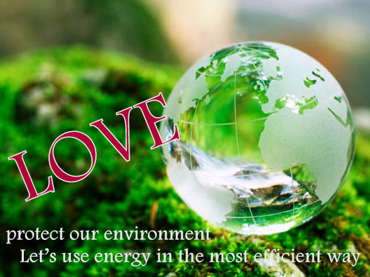
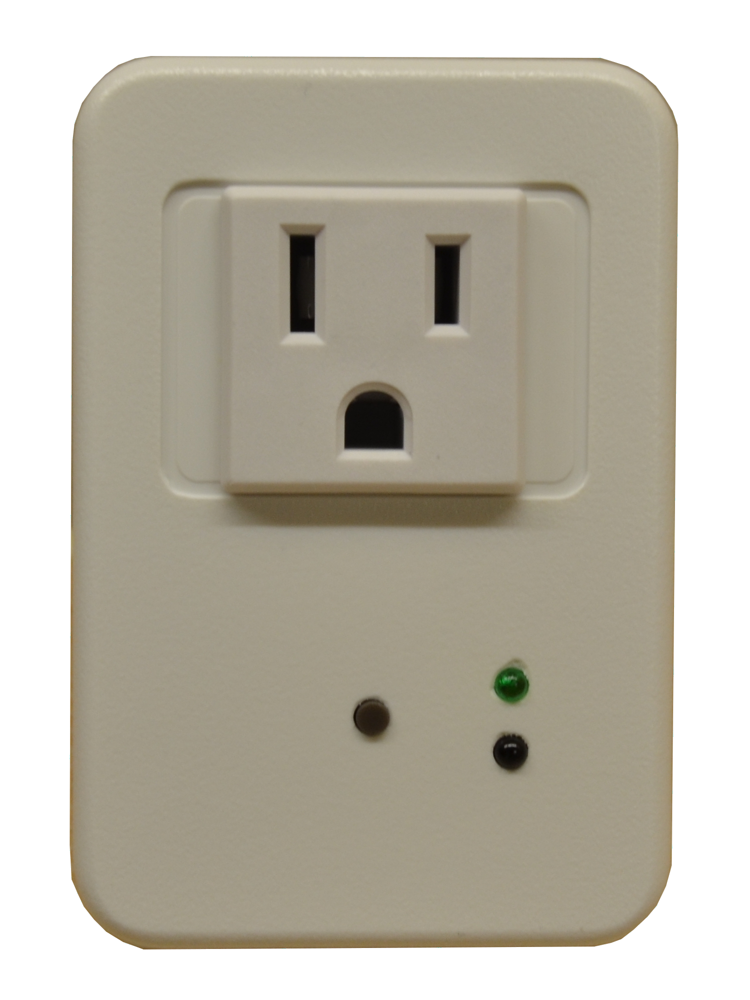
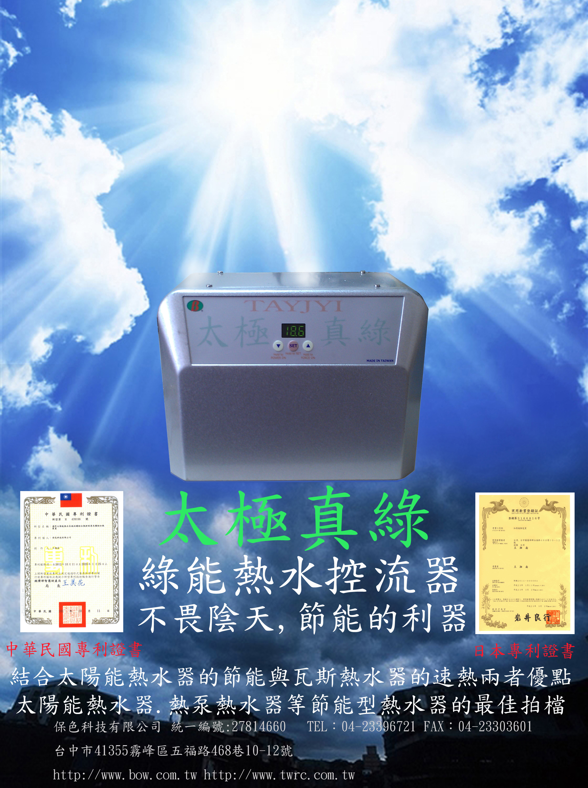

保色科技 無限創意
您為我們的下一代盡力了嗎？
自從人類歷史以來，一直以萬物之靈自居，追求進步與發展，歷經數次的工業革命，將人類的生活層次推展到新的境界。然而各國政府在經濟掛帥的前提下，往往無法有效遏止廠商與百姓對能源的濫用，地球生活環境正快速惡化中；由於人類無法不使用能源而生存，因此能源的最有效利用已經成為地球上每一份子最刻不容緩的時代使命，盡量使用潔淨的能源與能源的最有效利用，是維護地球萬物永續生存的不二法門。
太陽能熱水器與熱泵熱水器的發展，都是環保先驅努力的成果，但是因為設置環境的限制，導致無法將資源與能源做最有效的利用，保色科技擷取瓦斯熱水器高效率的快速優點與環保熱水器的節能優點，開發出太極真綠熱水控流器，讓瓦斯與綠能這兩種能源的利用都能發揮到極致。

環保愛地球 讓我們將能源做最有效的利用
AUTOMNT-電池自動保養放電器-環保新尖兵
延長電池的壽命，降低浪費與污染
使用高效率電源及微電腦
一年耗能不到3度電
保障生命財產安全又環保


